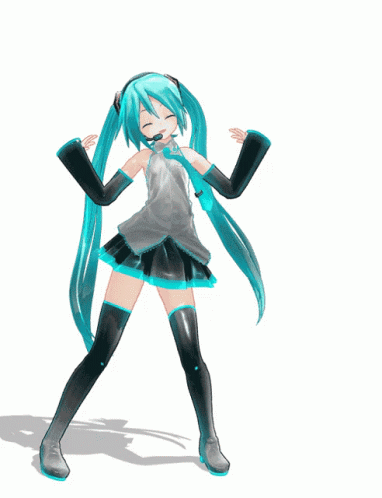
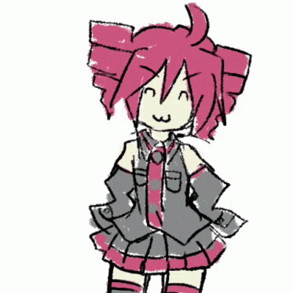
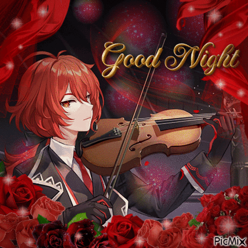
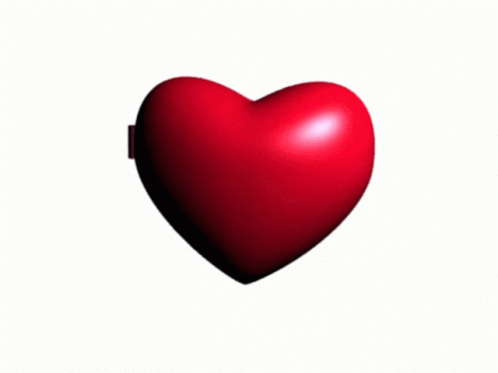

A pesar de que no es 14 de febrero, no me aguantaba las santas ganas de regalarte algo por ese día y mira, igualmente te lo hice, porque en verdad quería festejar el primer año de conocer a la hermosa mujer que me alegra todas las mañanas, tardes y noche todos los días.
Y solo por ese hermoso acontecimiento estoy aquí escribiendo esto mientras recuerdo lo hermosa persona y compañera de vida que has sido así que hacer esto es lo mínimo que puedo hacer por ti y por la hermosa relación que tenemos para así recordarte todos los sentimientos que siento contigo y lo obsesionado que estoy por tu aprobación, pero también porque te lo mereces más que nadie…
Así que no pienses que hago lo que hago por capricho o diversión, no más, lo hago para mostrarte que mi cariño y acciones son grandes y que están dirigidos para ti y solamente para la hermosa chica que tengo el honor de poder decirle "Bonita, Hermosa, Princesa, Reina, Amor" y a quien amo mucho